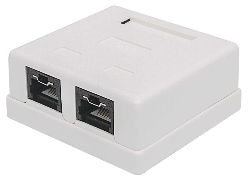

Roseta
Es un dispositivo de hardware que se utiliza para conectar cables de red a un panel de conexión o directamente a un dispositivo de red. Las rosetas de red vienen en diferentes tipos y categorías, cada una con características y aplicaciones específicas.
